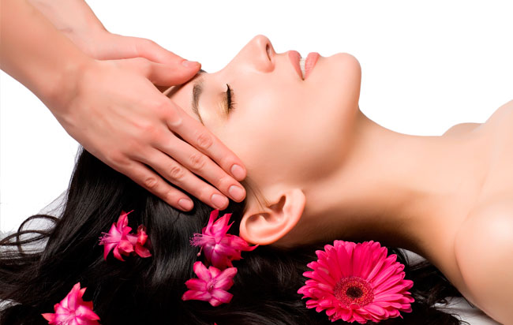
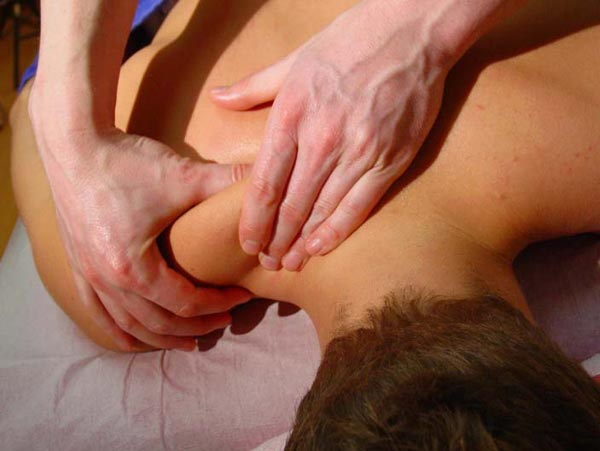
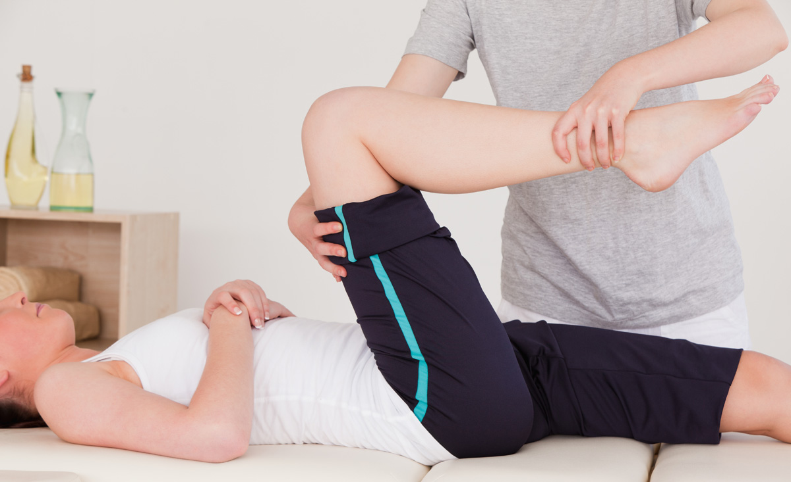

Spa y Cuidado de la Piel
Tenemos a nuestro servicio diferentes tipos de masajes tales como:
Masajes de Relajación:
Son técnicas suaves, que estimulan la relajación. La presión que se utiliza es suave y las técnicas más utilizadas son los deslizamientos. Se pueden realizar en todo el cuerpo hasta en el rostro y cuero cabelludo.
Masaje Descontracturante:
Técnica más violenta que tiene como objetivo descontracturar la musculatura. Es ideal realizarlo en zonas donde hay contracturas. Se acompañan de elongaciones y estiramientos. Puede ser mas doloroso y no tan relajante.
Masaje Deportivo:
Es un masaje que se utiliza después de competencias deportivas para generar una relajación de la musculatura sobre todo de piernas, son movimientos rápidos. Se puede acompañar de técnicas de elongación y descontracturantes.
Masaje con Piedras Calientes:
Técnica de masaje que se acompaña de piedras especiales que se calientan previamente y ayudan a relajar la musculatura por el calor que irradian. Se pueden utilizar en maniobras o poner las piedras sobre puntos específicos del cuerpo.